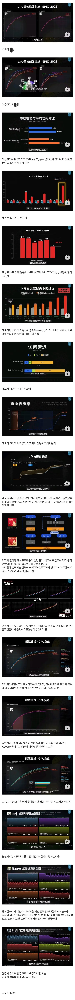

당장 영향받게 된 삼성도 내부적으로 비상걸렸다는 이야기가 있음
삼성은 스냅드래곤 For Galaxy라고 골든수율 버전에 오버클럭된걸 원래 받아왔는데, 저지랄나면 골든수율 뽑아도 좆된거같음
퀄컴은 펌웨어로 해결해보겠다 라는 씹소리를 했다고 하는데 애미 ㅋㅋ

당장 영향받게 된 삼성도 내부적으로 비상걸렸다는 이야기가 있음
삼성은 스냅드래곤 For Galaxy라고 골든수율 버전에 오버클럭된걸 원래 받아왔는데, 저지랄나면 골든수율 뽑아도 좆된거같음
퀄컴은 펌웨어로 해결해보겠다 라는 씹소리를 했다고 하는데 애미 ㅋㅋ
애플실리콘 <-- 이 새끼들 대체 어케 한거임?
내가 애플 개싫어하지만 애플실리콘 파워는 진짜.....
그래서 개싫어하면서도 회사에선 맥북만 15년째 쓰는중
집에선 꼿꼿히 윈도우 쓰는데 가면갈수록 시발 쉽지않다
엘젠5 인데 존버해야겠네
애플 하드웨어에 안드로이드를 넣어서 팔아줘~
8엘리트까지는 혁명급이었는데 그 후로는 또 지지부진하네
가격인상을 그렇게 쳐하더니 그 돈들 다 어디다 써먹은거냐???
이거27도 걸러야되나....
27년에 사는 15프맥보다 구린성능…
걱정마세요 수출용엔 퀄컴꺼 넣어드립니다^^
내수는.. 알지?
거기다 엑시노스도 좋아졌다는 얘기도 있던데